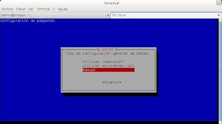

Servidor Proxy DNS con pdnsd
Posted on mar 10 enero 2012 in Tutorial de Linux • 3 min read
Ya hace un tiempo había explicado como se instala un servidor proxy DNS con dnsmasq, ahora explicaré la configuración de PDNSD utilizando como servidor de DNS los servidores raíz de OpenNIC debido a los posibles problemas que nos genere la aprobación de la Ley SOPA y la Censura en Internet.
Si quiere utilizar los servidores de DNS de OpenNIC más cercanos puede visitar el siguiente enlace. Si desea más información sobre OpenNIC puede revisar el siguiente artículo y la página del proyecto.
En mi caso luego de consultar los servidores de OpenNIC más cercanos usaré el siguiente servidor de DNS 192.121.86.100.
Instalación de pdnsd.
En Debian simplemente se ejecuta un apt-get install.
#apt-get install pdnsd
La aplicación muestra una ventana de dialogo donde menciona 3 métodos de configuración (resolvconf, servidores de DNS raíz o manual).
En este caso se usará el método manual y se selecciona en la ventana de dialogo.

Se edita el archivo /etc/pdnsd.conf.
Se agrega la siguiente información:
server {
label = "OpenNIC";
ip = 192.121.86.100; //IP del servidor DNS
uptest = query; //Lrealiza consultas DNS de una solicitud DNS.
interface=wlan0; //La interface conectada a la red.
}
Se modifica a yes el parámetro START_DAEMON del archivo /etc/default/pdnsd para iniciar automáticamente el servicio pdnsd.
START_DAEMON=yes
Al editar el archivo /etc/resolv.conf y agregar el servidor de DNS 127.0.0.1.
nameserver 127.0.0.1
Se reinicia el servicio pdnsd:
# invoke-rc.d pdnsd restart
Stopping pdnsd.
Starting pdnsd.
Se hace una consulta con dig:
dig www.barrapunto.com|grep "Query time"
;; Query time: 316 msec
dig www.barrapunto.com|grep "Query time"
;; Query time: 2 msec
Para verificar el funcionamiento del servidor se ejecuta el siguiente comando:
# pdnsd-ctl status
Opening socket /var/cache/pdnsd/pdnsd.status
pdnsd-1.2.8-par running on jewel.
Cache status:
=============
2048 kB maximum disk cache size.
56894 of 2107392 bytes (2.7%) memory cache used in 216 entries.
Thread status:
==============
server status thread is running.
pdnsd control thread is running.
tcp server thread is running.
udp server thread is running.
19 query threads spawned in total (0 queries dropped).
10 running query threads (10 active, 0 queued).
Configuration:
==============
Global:
-------
Cache size: 2048 kB
Server directory: /var/cache/pdnsd
Scheme file (for Linux pcmcia support): /var/lib/pcmcia/scheme
Server port: 53
Server ip (0.0.0.0=any available one): 127.0.0.1
Ignore cache when link is down: off
Maximum ttl: 604800
Minimum ttl: 900
Negative ttl: 900
Negative RRS policy: default
Negative domain policy: auth
Run as: pdnsd
Strict run as: on
Use NSS: on
Paranoid mode (cache pollution prevention): on
Ignore CD ('checking disabled') flag in queries: on
Control socket permissions (mode): 600
Maximum parallel queries served: 40
Maximum queries queued for serving: 60
Global timeout setting: 10
Parallel queries increment: 2
Randomize records in answer: on
Query method: udp_only
Query port start: 1024
Query port end: 65535
TCP server thread: on
TCP query timeout: 30
Delegation-only zones: (none)
Server 0:
------
label: OpenNIC
ip: 192.121.86.100
server assumed available: yes
port: 53
uptest: query
timeout: 120
uptest interval: 900
ping timeout: 600
ping ip: (using server ip)
interface: wlan0
device (for special Linux ppp device support):
uptest command:
uptest user: (process owner)
force cache purging: off
server is cached: on
lean query: on
Use only proxy?: off
Assumed root server: no
Randomize server query order: no
Default policy: included
Policies: (none)
Succeeded
Se pueden agregar tantas IPS como se quiera.
Si desea más información para configurar pdnsd revise los siguientes enlaces:
https://wiki.archlinux.org/index.php/Pdnsd_(Espa%C3%B1ol)
http://manualinux.heliohost.org/pdnsd.html
¡Haz tu donativo! Si te gustó el artículo puedes realizar un donativo con Bitcoin (BTC) usando la billetera digital de tu preferencia a la siguiente dirección: 17MtNybhdkA9GV3UNS6BTwPcuhjXoPrSzV
O Escaneando el código QR desde la billetera: